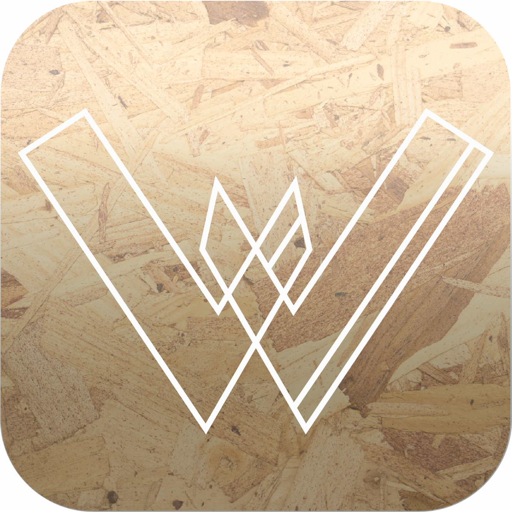
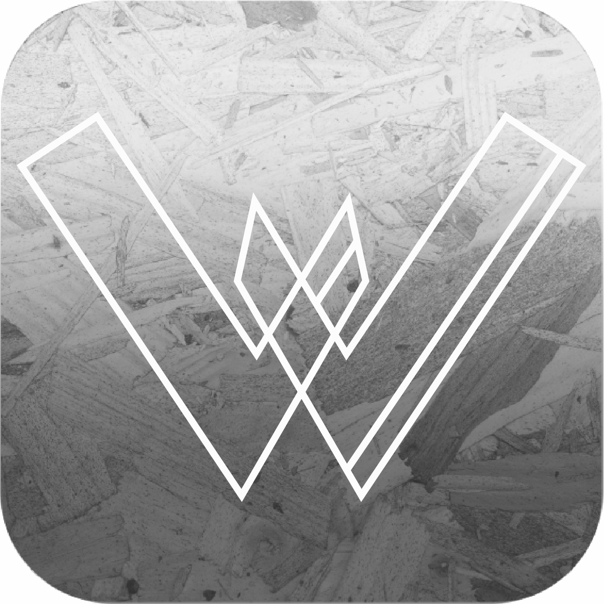

Moodboard

Styletile
Appikon


Hvordan kan Republikken styrke interaktionen mellem medlemmer gennem en ny app?
Navn: Anders Henriksen
Alder: 28
Bopæl: Amager
Status: Optaget
Beskæftigelse: Account Manager hos AB-Group
Anders er født og opvokset i Herlev, hvor han er blevet opfostret af sine forældre, der har en over middel indkomst. Anders dimitterede fra Herlev Gymnasium i 2009 hvor han efterfølgende var skiguide i Østrig i 6 måneder. Da Anders kom hjem fra Østrig fik han et job hos AB-group som telefonsælger, her har han arbejdet sig om de sidste 3 år, hvilket har givet ham en forfremmelse til account manager, samt mulighed for at spare en masse penge sammen. Anders har investeret sine penge i en stor andelslejlighed på Amager hvor han bor med sin kæreste, og de tænker at stifte familie inden for det næste år.
Til dagligt arbejder Anders som account manager hos firmaet AB-Group, hvilket han er rigtig glad for. Da han har kort til arbejde tager han sin cykel, undtagen i regn- og snevejr, her tager han offentlig transport for ikke at svine tøjet til.
Når Anders har fri kan han godt lide at bruge tiden fornuftigt, derfor holder han meget af at læse bøger. Udover dette har Anders en talegave fra en anden planet, hvilket han ofte bruger i forskellige debat-events. (han har vundet dm i debat). Anders prioriterer sin familie højt, hvilket ofte kommer til udtryk gennem de mange familiemiddage og spilleaftener der bliver holdt hjemme i lejligheden på Amager.
Kærester/ex-kærester som kollegaer kan ødelægge det for alle andre. Har førhen ødelagt en hel fløj af 30 mennesker som simpelthen stoppede deres medlemskab. (skaber kaos, jalousi, skænderier, uenigheder osv.)
Login – facebook, linkedin. Hvis man ikke har face eller linkedin. Kompetencer. Går man glip af noget? Eller kan man oprette sin profil gennem selve appen.
Ansøgning om hjælp funktion. Blive forstyrret i sit arbejde. Tid er penge.
Hvis Karma-hjælp-konceptet kun går den ene vej og man ikke får anerkendelse af det arbejde man har udført.
Kan medlemsskab være for dyrt? Studerende har ikke råd? –går glip af kunder fra den unge generation.